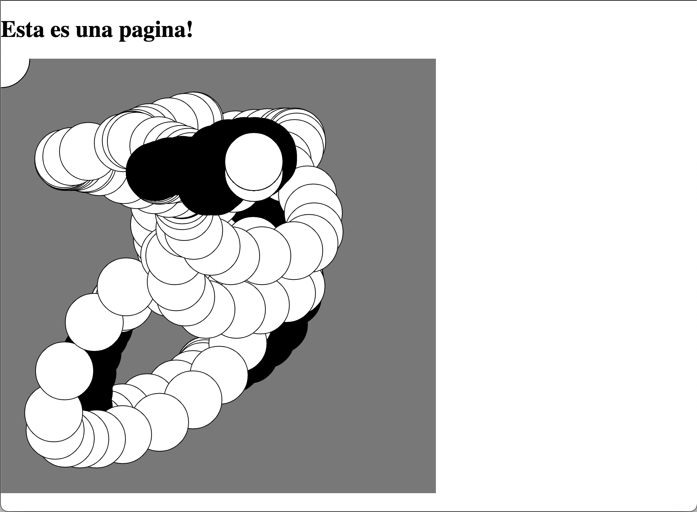
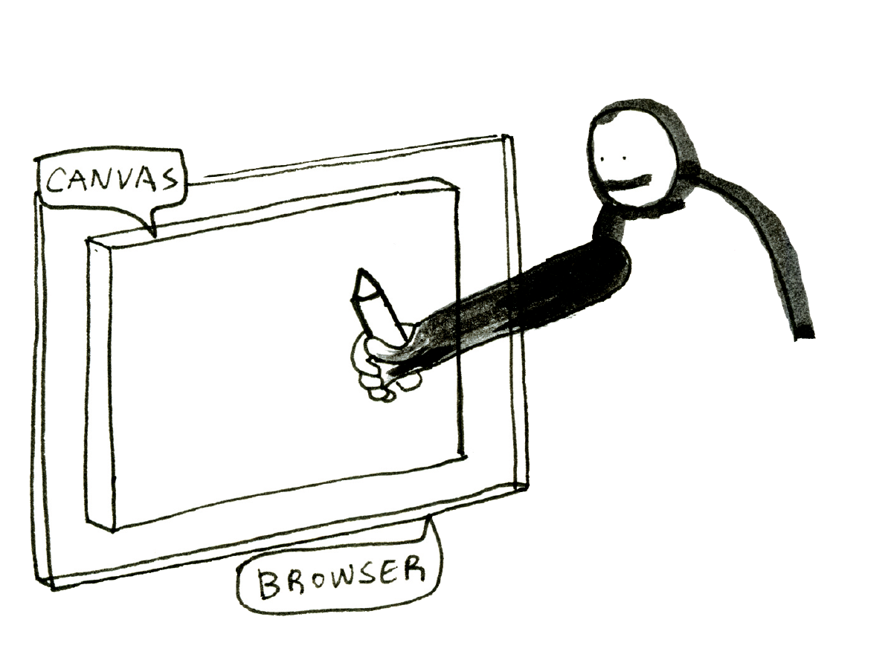

2. p5.js
FUNDAMENTOS DE CÓDIGO | CENTRO | 2021-2
¿Que es p5.js?
es una herramienta para hacer animaciones, imágenes e interacciones con código.
¿Que es p5.js?
es una herramienta para hacer animaciones, imágenes e interacciones con código.
es una biblioteca de JavaScript.
¿Que es p5.js?
es una herramienta para hacer animaciones, imágenes e interacciones con código.
es una biblioteca de JavaScript.
es Processing en la web.
En el lejano 2001, mientras trabajan en el MIT Media Lab, Ben Fry y Casey Reas buscaban crear una herramienta para que artistas tuvieran el poder de crear software fácilmente. Así nació Processing.


El objetivo principal fue crear una manera más intuitiva de aprender código, a través de una retroalimentación visual.
Usualmente crear software interactivo requería aprender muchos conceptos técnicos, y la gente interesada terminaba sintiendo frustración.
A lo largo de los años Processing ganó mucha popularidad y se formó una gran comunidad de creadores.
En 2014, Reas, Fry y Laureen McCarthy, comenzaron a preguntarse como sería si Processing pudiera usarse en la Web.
p5.js es la interpretación de Processing usando tecnologías web.
Sus principales diferencias son:
-
Processing esta escrito en Java y
p5.jsen JavaScript. -
El editor de Processing es un programa, mientras que
p5.jsse ejecuta en un navegador.
En la página de p5.js puedes encontrar más información.
Editor y sandbox
Para comenzar, necesitaremos tener un editor donde escribir código y un navegador donde ejecutar nuestros sketches.
En la página de p5.js puedes encontrar un editor listo:
https://editor.p5js.org/
Editor - Area de código
Editor - Play y Stop
Editor - Consola
CodeSandbox
Una alternativa al editor de p5.js, es la plataforma CodeSandbox:
Ofrece conexión con GitHub y un modo de edición "live" útil para esta clase.
p5.js en CodeSandbox
p5.js como biblioteca de JavaScript
El editor es ideal si deseamos programar de inmediato. Pero si buscamos usar p5.js
en un proyecto web, es necesario descargarlo e incluirlo como una biblioteca.
Para ello se puede descargar el archivo *.js desde la página:
https://p5js.org/download/
Una vez descargado el archivo p5.js, se incluye en el HTML deseado:
<html>
<head>
...
</head>
<body>
<h1>Esta es una pagina!</h1t>
<script src="p5.js"></script>
</body>
</html>
Incluimos un archivo llamado sketch.js:
<html>
<head>
...
</head>
<body>
<h1>Esta es una pagina!</h1t>
<script src="p5.js"></script>
<script src="sketch.js"></script>
</body>
</html>
El archivo sketch.js debe contener el código de nuestro sketch.
function setup() {
createCanvas(400, 400);
}
function draw() {
if (mouseIsPressed) {
fill(0);
} else {
fill(255);
}
ellipse(mouseX, mouseY, 80, 80);
}
Finalmente, con un servidor local, podemos probarlo en nuestro navegador. O podemos subirlo a un servicio de hosting para que esté disponible para todo el mundo.
Dibujando una línea
El primer sketch que escribiremos será uno muy simple: dibujar una línea diagonal.
Imaginemos que p5.js es un robot al cual le daremos instrucciones de como dibujar una línea.

¡Listo! Acabamos de implementar nuestro primer programa.
Las palabras
createCanvas y line
son nombres de funciones de dibujo.
Para usar una función de dibujo escribimos su nombre seguido de paréntesis, y un punto y coma:
();
Entre los paréntesis, separados por comas, ponemos los parámetros de la función. Estos parámetros, son los valores que la función usará para hacer su labor.
createCanvas(500, 500);
Ten en cuenta que el código es sensible a mayúsculas, por lo que debes tener cuidado al escribir el nombre de las funciones.